Faculty Activity Reporting for Merit Review 2025–26
Step-by-Step Instructions for Interfolio
Overview
Before You Start
This guide walks you through entering your activities from the past year into Interfolio for your annual merit review. Set aside about 30–60 minutes. Before you begin, gather a list of your activities from the past year (publications, grants, teaching, service, etc.).
Open progress checklist
Scholarly Contributions and Creative Productions
Grants
Scheduled Teaching (review only)
Teaching Innovation and Curriculum Development
Other Instructional Activities
Academic Advising – Undergraduate (review only)
Academic Advising – Graduate / Professional (review only)
Mentoring for Post Doctorates, Visiting Scholars/Fellows, or Residents
Other Support Activities for Students
Awards and Honors
Other Industry/Faculty Collaboration
Ad Hoc Reviews, Grand Agency/Peer Review Committees
Technical or Expert Assistance/Technology Transfer
Professional or Voluntry Organization Affiliation
Public and Professional Service
University, Scholl/College, Regional Campus, Department service
Step 1.Open your web browser (Chrome, Firefox, or Safari) and go to: account.interfolio.com
Step 2.You will see a Sign In page. Do NOT type in the Email or Password fields on the left side. Instead, on the right side, click the button that says Sign in with Partner Institution.
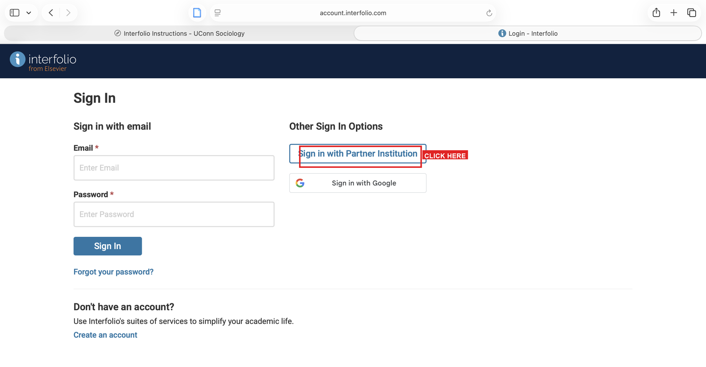
Click “Sign in with Partner Institution” on the right side (do NOT use the Email/Password fields on the left)
Step 3.A new page will appear that says “Sign in through your institution.” In the search box, type University of Connecticut.
Step 4.A dropdown list will appear. Click University of Connecticut (not “University of Connecticut Health”).
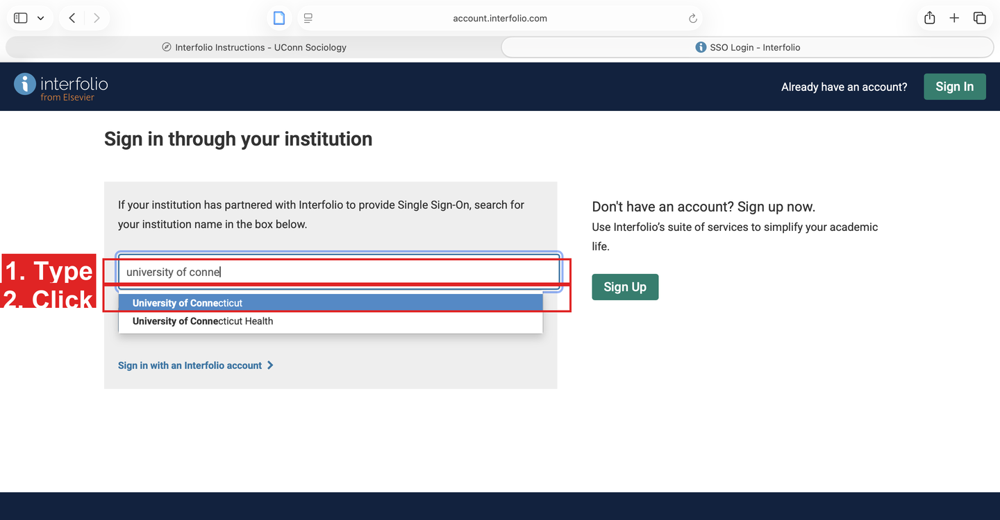
Type “University of Connecticut” and select it from the dropdown list
Step 5.You will be redirected to UConn’s login page. Sign in with your NetID and password.
Step 6.Once logged in, on the left side of the screen, click the Activities tab.
A list of categories such as “Scholarly Contributions and Creative Productions,” “Grants,” “Scheduled Teaching,” and others. These are the categories where you will enter your activities.
Reference
How to Add an Entry (Common Steps)
Most categories follow the same steps. Read this section once, then refer back to it as needed.
Step 1.Click the category name (e.g., Scholarly Contributions and Creative Productions).
Step 2.Scroll down until you see the blue +ADD button. Click it.
Step 3.If a list appears asking you to choose a type (e.g., “Journal Article,” “Book Chapter”), select the one that fits your work, then click CONTINUE.
Step 4.Fill in the form. Required fields are marked with an asterisk (*). At minimum, fill in the title and any required fields.
Step 5.When you are done:
To add another entry in the same category, click SAVE AND ADD ANOTHER.
To finish this category, click SAVE AND GO BACK.
Step 6.You will return to the category list. Move on to the next category.
If you make a mistake, click the entry to edit it. You can also delete it and start over.
Category 1
1. Scholarly Contributions and Creative Productions
Enter your publications from the past year: journal articles, book chapters, conference papers, reports, etc.
Books under contract: If your book is accepted by a publisher but not yet published, set Status to In Progress. Do not use Submitted, Accepted, In Press, or Completed/Published — those apply only once the book has actually been released.
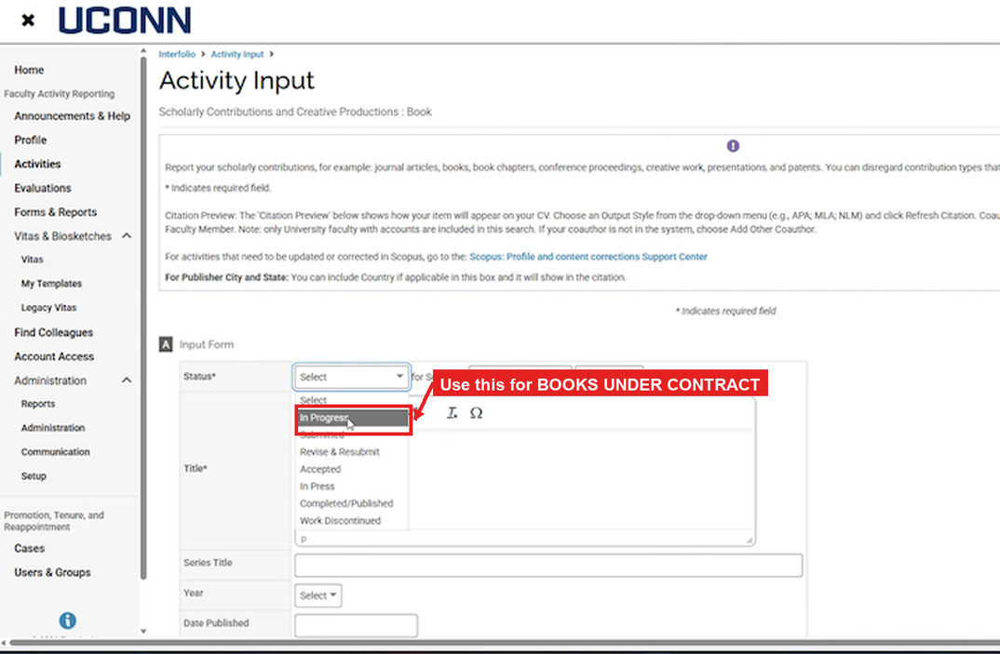
In the Activity Input form, select “In Progress” as the Status for books under contract
How to Add a Co-Author
When entering a journal article or other publication, you may need to add co-authors. Here is how:
Step 1.In the Coauthor section of the form, click the blue +ADD button.
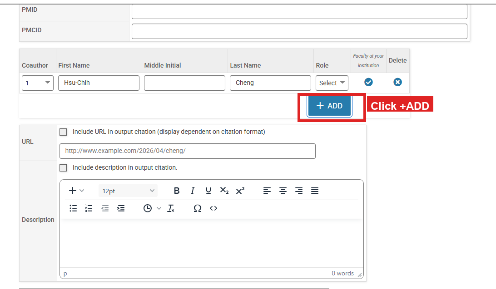
The Coauthor section with the +ADD button
Step 2.A popup will appear with two options:
If your co-author is a UConn faculty member, click SELECT FACULTY AT YOUR INSTITUTION.
If your co-author is at another university, click ADD OTHER COAUTHOR and type their name manually.
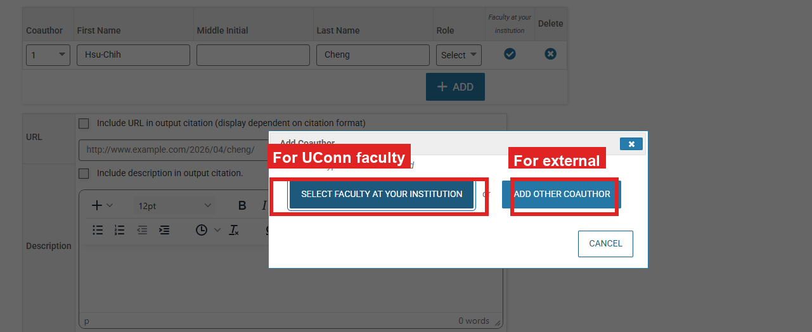
Choose “Select Faculty at Your Institution” or “Add Other Coauthor”
Step 3.If you chose “Select Faculty at Your Institution”:
Type the person’s first or last name in the search box at the top right.
Their name will appear in the “Available” column. Click their name to highlight it in blue.
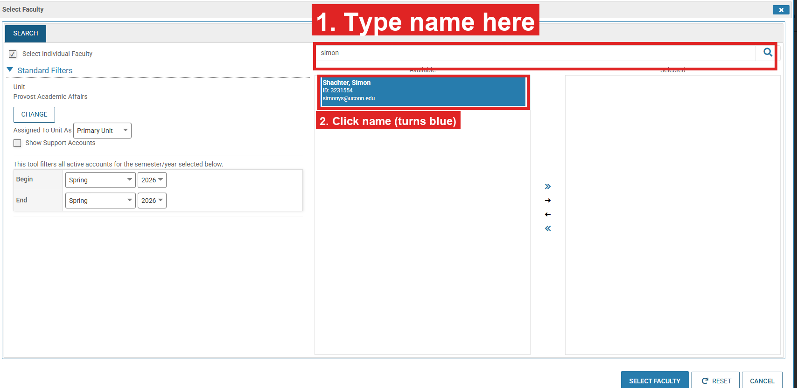
Search for the faculty member and click their name to select it
Step 4.Click the >> arrow button (between the two columns) to move the name to the “Selected” column. Then click the SELECT FACULTY button at the bottom.
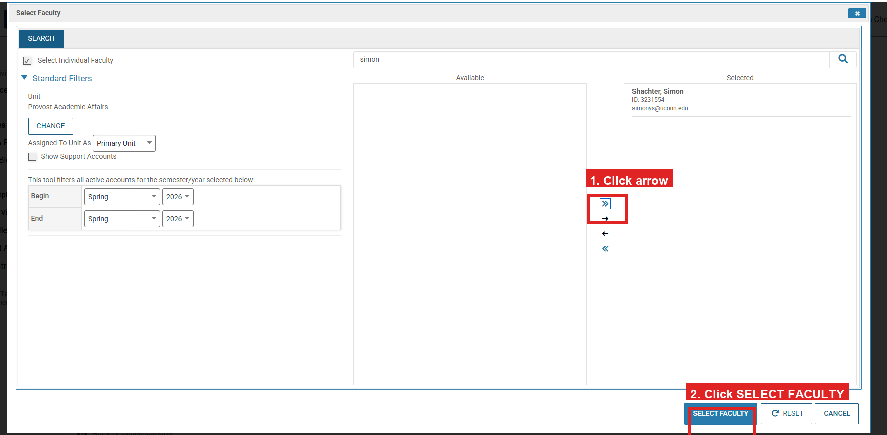
Move the name to “Selected,” then click the red Select Faculty button
The co-author’s name now appears in the Coauthor table on your form. Repeat these steps to add more co-authors.
Category 2
2. Grants
Enter any grant applications you submitted or grants you received in the past year.
Category 3
3. Scheduled Teaching READ-ONLY
You do NOT need to enter anything here. Your teaching records are automatically imported from the Student Administration System.
Enter any new teaching practices, curriculum design, or course enhancements you developed.
Category 5
5. Other Instructional Activities
Enter instructional activities outside of your regular courses, such as guest lectures, workshops, or seminars.
Enter your advisees here. Log all graduate students you advised this year — both Major Advisees (students whose committee you chair) and Associate Advisees (students whose committee you serve on).
Step 1.In the Title field, type Advisement.
Step 2.In the Description field, list your advisees in two groups:
Major Advisees: [full names, comma-separated]
Associate Advisees: [full names, comma-separated]
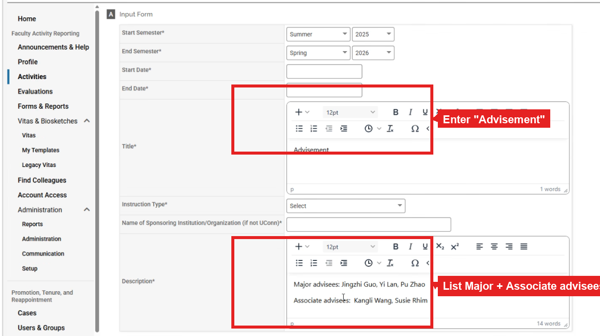
Enter “Advisement” as the Title and list your advisees in the Description
Step 3.Fill in Start Date and End Date — both are required.
If you don’t remember the exact dates, put in an approximate date that falls in the correct semester. For example, for Summer 2025 you could enter June 1, 2025 as the Start Date.
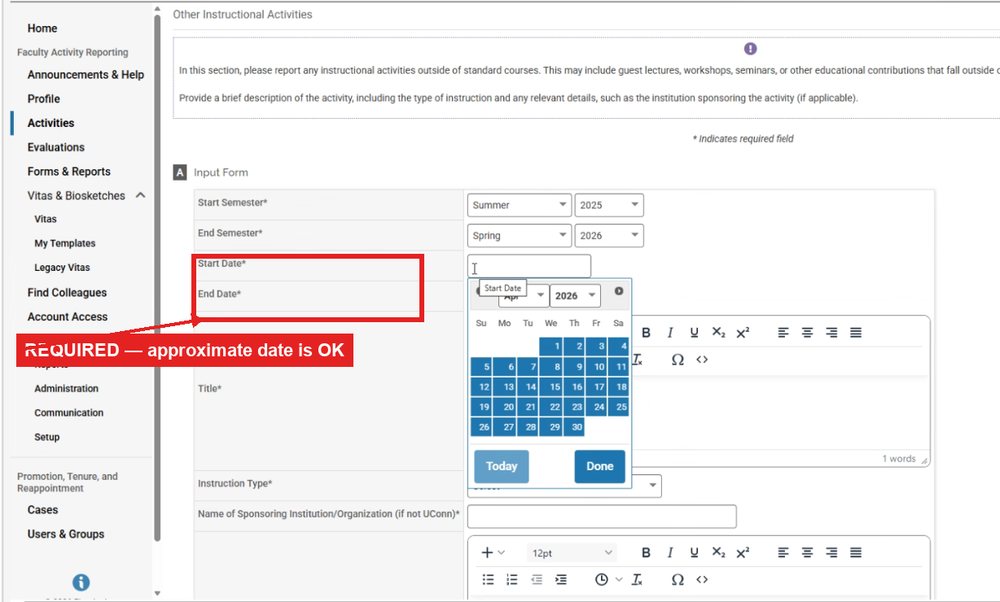
Both Start Date and End Date are required fields
Category 6
6. Academic Advising – Undergraduate READ-ONLY
You do NOT need to enter anything here. Your undergraduate advising data is automatically imported.
If you see an error, contact your department administrator.
Category 7
7. Academic Advising – Graduate / Professional READ-ONLY
You do NOT need to enter anything here. Your graduate advising data is automatically imported.
If you see an error, contact your department administrator.
Category 8
8. Mentoring for Post Doctorates, Visiting Scholars/Fellows, or Residents
Enter mentoring activities for post-docs, visiting scholars, or residents.
Category 9
9. Other Support Activities for Students
Enter any support you provided to students outside of teaching or advising, such as advising student organizations, recruitment activities, or informal mentoring.
Category 10
10. Awards and Honors
Enter any awards or honors you received, including both UConn awards and external recognitions.
Always set the Semester to when you received the award. The form defaults to the current semester, but this field is how the department knows when the award was received. If you leave it at the default, we won’t be able to tell when the award was actually granted.
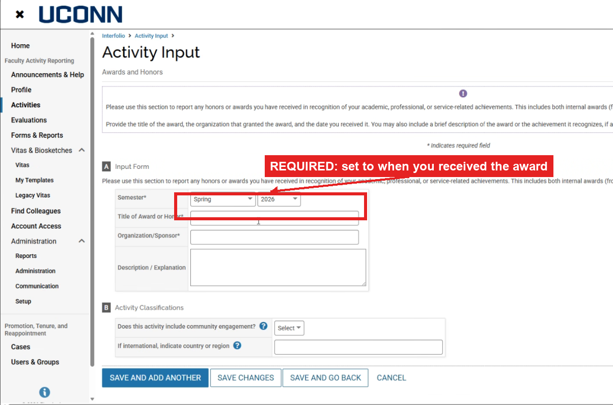
Change the Semester and year to match when you received the award
Category 11
11. Other Industry/Faculty Collaboration
Enter collaborations with industry partners or faculty at other institutions, including consulting work, joint initiatives, or advisory roles.
Category 12
12. Ad Hoc Reviews, Grand Agency/Peer Review Committees
Enter any peer review or manuscript review work you did for journals, granting agencies, or other organizations.
Fill in Start Date and End Date. Both are required so the department can see which reviews you completed in the past year. If you don’t remember the exact dates, an approximate date within the correct month or semester is fine (e.g. June 1, 2025 for a Summer 2025 review).
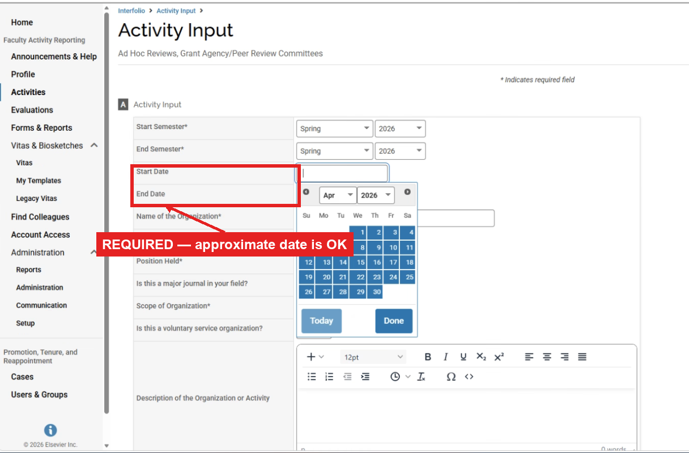
Fill in both Start Date and End Date on the Ad Hoc Reviews form
Category 13
13. Technical or Expert Assistance/Technology Transfer
Enter any technical advice, expert witness testimony, or technology transfer work you provided to external organizations.
Category 14
14. Professional or Voluntry Organization Affiliation
Enter your memberships in professional or voluntary organizations, including any leadership roles.
Category 15
15. Public and Professional Service
Enter community engagement or professional service outside the university, such as outreach programs or volunteering.
Category 16
16. University, Scholl/College, Regional Campus, Department service
Enter any committee work, program support, or one-time service activities at UConn. If the activity took place in one day, enter the same date for both start and end.
Category 17
17. Visiting Professorships and Fellowships
Enter any visiting positions you held at other institutions.
Category 18
18. Media Appearances & Public Relations
Enter any media appearances including TV, radio, podcasts, newspapers, or online platforms.
Category 19
19. Professional Development
Enter informal educational or career-advancement activities.
Optional
Preview Your Activities
After you finish entering your activities, you do not need to submit anything. The department head will have access to your activities automatically.
If you’d still like a PDF of your activities for your own reference, or to double-check your entries for errors, you can generate a preview by following the steps below.
Step 1.On the left side of the screen, click the small down arrow next to Vitas & Biosketches.
Step 2.Click Vitas.
Step 3.Click Add New Vita.
Step 4.Leave the type as Institutional.
Step 5.In the Vita Name box, type your last name followed by “Merit 2026” (for example: “Cheng Merit 2026”).
A document will appear with your activities arranged by category.
Step 9.At the top of the document, change the dates:
Set Start Term to Summer 2025
Set End Term to Spring 2026
Step 10.Click Refresh Vita so the correct date range takes effect.
Step 11.Review the document carefully. Make sure all your activities are listed and correct.
Step 12.Click Save.
If something is missing or incorrect, go back to the Activities tab, find the entry, fix it, and then create a new vita.
FAQ
Troubleshooting
I cannot find a category.
Categories are listed in the same order as this guide. Scroll through the Activities tab or use the sidebar navigation on this page to find the one you need.
I made a mistake in an entry.
Click the entry to open it, make your changes, and click Save. You can also delete the entry and re-add it.